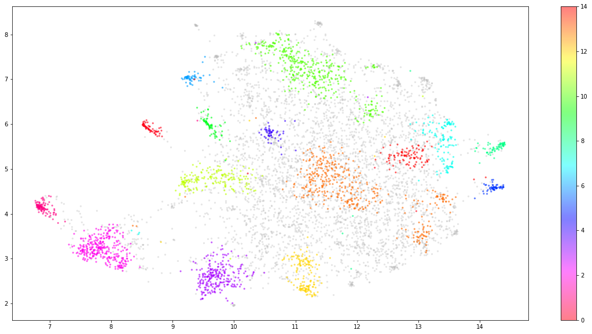

TM07 word2vec vs doc2vec
Contents
TM07 word2vec vs doc2vec#
Loading data#
!mkdir ./data
!wget -P ./data -N https://github.com/p4css/py4css/raw/main/data/sentiment.csv
mkdir: ./data: File exists
--2022-11-26 23:30:06-- https://github.com/p4css/py4css/raw/main/data/sentiment.csv
Resolving github.com (github.com)...
20.27.177.113
Connecting to github.com (github.com)|20.27.177.113|:443...
connected.
HTTP request sent, awaiting response...
302 Found
Location: https://raw.githubusercontent.com/p4css/py4css/main/data/sentiment.csv [following]
--2022-11-26 23:30:06-- https://raw.githubusercontent.com/p4css/py4css/main/data/sentiment.csv
Resolving raw.githubusercontent.com (raw.githubusercontent.com)... 185.199.111.133, 185.199.108.133, 185.199.109.133, ...
Connecting to raw.githubusercontent.com (raw.githubusercontent.com)|185.199.111.133|:443...
connected.
HTTP request sent, awaiting response...
200 OK
Length: 558978 (546K) [text/plain]
Saving to: './data/sentiment.csv'
sentiment.csv 0%[ ] 0 --.-KB/s
sentiment.csv 64%[===========> ] 351.17K 1.60MB/s
sentiment.csv 100%[===================>] 545.88K 2.27MB/s in 0.2s
Last-modified header missing -- time-stamps turned off.
2022-11-26 23:30:07 (2.27 MB/s) - './data/sentiment.csv' saved [558978/558978]
import pandas as pd
df = pd.read_csv('data/sentiment.csv')
df.head(5)
| tag | text | |
|---|---|---|
| 0 | P | 店家很給力，快遞也是相當快，第三次光顧啦 |
| 1 | N | 這樣的配置用Vista系統還是有點卡。 指紋收集器。 沒送原裝滑鼠還需要自己買，不太好。 |
| 2 | P | 不錯，在同等檔次酒店中應該是值得推薦的！ |
| 3 | N | 哎！ 不會是蒙牛乾的吧 嚴懲真凶！ |
| 4 | N | 空尤其是三立電視臺女主播做的序尤其無趣像是硬湊那麼多字 |
Tokenization#
import jieba
df['token_text'] = df['text'].apply(lambda x:list(jieba.cut(x)))
df.head()
Building prefix dict from the default dictionary ...
Loading model from cache /var/folders/j3/p4x0mssx55nd8dn903h5wdb00000gn/T/jieba.cache
Loading model cost 0.303 seconds.
Prefix dict has been built successfully.
| tag | text | token_text | |
|---|---|---|---|
| 0 | P | 店家很給力，快遞也是相當快，第三次光顧啦 | [店家, 很, 給力, ，, 快遞, 也, 是, 相當快, ，, 第三次, 光顧, 啦] |
| 1 | N | 這樣的配置用Vista系統還是有點卡。 指紋收集器。 沒送原裝滑鼠還需要自己買，不太好。 | [這樣, 的, 配置, 用, Vista, 系統, 還是, 有點, 卡, 。, , 指紋,... |
| 2 | P | 不錯，在同等檔次酒店中應該是值得推薦的！ | [不錯, ，, 在, 同等, 檔次, 酒店, 中應, 該, 是, 值得, 推薦, 的, ！] |
| 3 | N | 哎！ 不會是蒙牛乾的吧 嚴懲真凶！ | [哎, ！, , 不會, 是, 蒙牛, 乾, 的, 吧, , 嚴懲, 真凶, ！] |
| 4 | N | 空尤其是三立電視臺女主播做的序尤其無趣像是硬湊那麼多字 | [空, 尤其, 是, 三立, 電視, 臺, 女主播, 做, 的, 序, 尤其, 無趣, 像是... |
Training w2v#
from gensim.models import Word2Vec
w2v = Word2Vec(df['token_text'], min_count=1, vector_size=300, window=10, sg=0, workers=4)
Representsd by w2v#
import numpy as np
all_list = []
for i, tokens in enumerate(df["token_text"]):
temp_w2v = np.zeros(300)
for tok in tokens:
temp_w2v += w2v.wv[tok]
all_list.append(temp_w2v)
X = np.array(all_list)
Training doc2vec#
from gensim.models.doc2vec import Doc2Vec, TaggedDocument
Represented by TaggedDocument#
tagged = [TaggedDocument(words=tokens, tags=[i])
for i, tokens in enumerate(df["token_text"])]
Training model#
d2v = Doc2Vec(tagged, vector_size=100, alpha=0.025, window=5,
min_alpha=0.00025, min_count=5, dm=1)
# dm=1 : ‘distributed memory’ (PV-DM) ;
# dm=0 : ‘distributed bag of words’ (PV-DBOW)
d2v.train(tagged, total_examples=d2v.corpus_count, epochs=20)
Represented by d2v#
import numpy as np
all_list = []
for i, tokens in enumerate(df["token_text"]):
all_list.append(d2v.infer_vector(tokens))
X = np.array(all_list)
X.shape
(6388, 100)
Plotting#
Reduced by umap#
# !pip install umap-learn
import umap
umap_embeddings = umap.UMAP(n_neighbors=15,
n_components=5,
metric='cosine').fit_transform(X)
Clustering by HDBSCAN#
# !pip install hdbscan
import hdbscan
from collections import Counter
cluster = hdbscan.HDBSCAN(min_cluster_size= 50,
metric='euclidean',
cluster_selection_method='eom').fit(umap_embeddings)
df['cluster'] = list(cluster.labels_)
print(df.columns)
print(Counter(df['cluster']))
Index(['tag', 'text', 'token_text', 'cluster'], dtype='object')
Counter({-1: 3970, 13: 402, 10: 380, 2: 328, 3: 255, 11: 183, 12: 157, 7: 128, 1: 116, 14: 96, 0: 68, 9: 67, 8: 66, 6: 60, 5: 58, 4: 54})
Plotting#
import matplotlib.pyplot as plt
umap_data = umap.UMAP(n_neighbors=15, n_components=2, min_dist=0.0, metric='cosine').fit_transform(X)
result = pd.DataFrame(umap_data, columns=['x', 'y'])
result['labels'] = cluster.labels_
fig, ax = plt.subplots(figsize=(20, 10))
outliers = result.loc[result.labels == -1, :]
clustered = result.loc[result.labels != -1, :]
plt.scatter(outliers.x, outliers.y, color='#BDBDBD', s=5, alpha=0.3)
plt.scatter(clustered.x, clustered.y, c=clustered.labels, s=5, alpha=0.5, cmap='hsv_r')
plt.colorbar()
<matplotlib.colorbar.Colorbar at 0x28aad0fa0>
